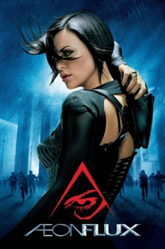

Æon Flux (2005)


The Perfect World Meets The Perfect Assassin

Avaliação (TMDb):


5.6/10 (1.6K votos)
Avaliação (Usuário):
País:United States, 93 minutos
Idiomas falados:Inglês, Português
Gênero(s):Ação, Sci-Fi, Suspense
Diretor(s):Karyn Kusama
Codec:MPEG-2 (DVD)
Número: 465
Sinopse:
No séc. XXV, Aeon Flux (Theron) é uma operacional de um grupo de rebeldes que lutam contra um regime totalitário que governa uma sociedade aparentemente perfeita mas que esconde vários segredos. Aeon será enviada numa missão para assassinar um dos governantes.
Elenco:
Charlize Theron, Marton Csokas, Jonny Lee Miller, Sophie Okonedo, Frances McDormand, Pete Postlethwaite, Amelia Warner, Caroline Chikezie, Paterson Joseph, Nikolai Kinski
Tipo de mídia: DVD5,
Legendas: Inglês, Português
Alugado: Não
Tela: 2.35:1